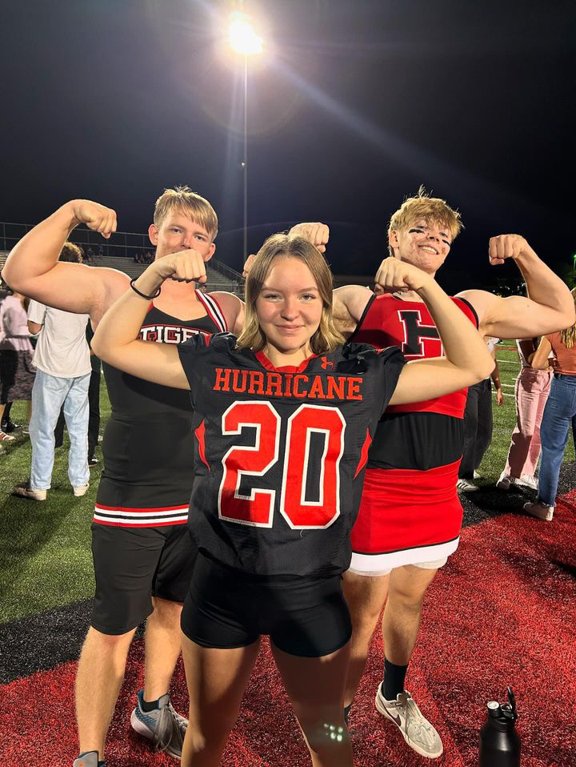
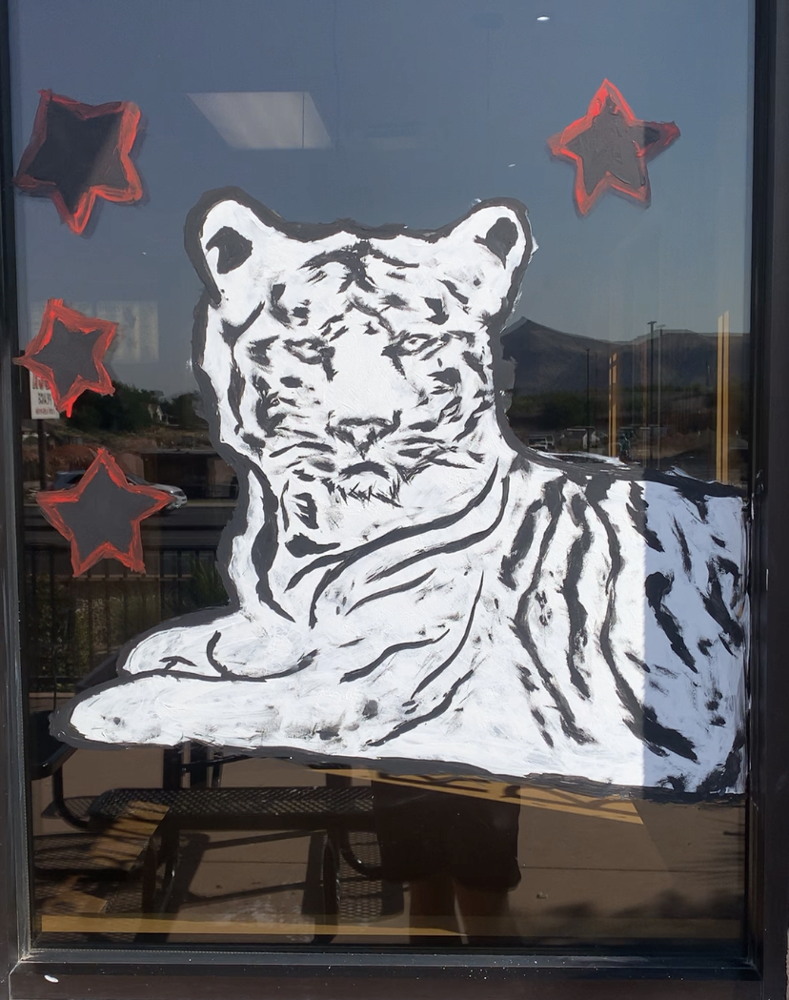

IT and School Spirit Contributions
I have been involved in various other activities that highlight my dedication to supporting the community through my skills and enthusiasm:
- Provided IT Services to Elderly (December 2023): Offered IT assistance to elderly members of the community, helping bridge the technology gap and making their day-to-day lives easier.
-

Powderpuff Cheerleader (September 2024): Participated as a Powderpuff cheerleader, supporting school spirit and fostering a sense of community.
National Honor Society
My involvement with the National Honor Society has been a significant part of my commitment to community service and citizenship. Here are some of the activities I've participated in:
- National Honor Society Member (2023-Present): Participated in National Honor Society activities for 2 years, contributing to multiple community initiatives.
- National Honor Society Vice President (2024-Present): Helped organize community service projects this year weighing everyones opinions, and ran the social media.
Community Projects
As part of my commitment to helping those in need, I have taken part in the following community projects:
- Subs for Santa (2023 & 2024): Raised over $5,000 to provide Christmas presents to families in need. This project was especially meaningful as it brought joy to those who needed it most during the holiday season.
- Dove Center Support (2023 & 2024): Assisted in organizing and preparing goodie bags for children at the Dove Center during Halloween, helping make the celebration special for those in need.
- 
Painting for Homecoming Week (2023 & 2024): Participated in painting local businesses to build school spirit during Homecoming week, enhancing the community atmosphere.
Impact and Reflection
My involvement in community service has shown me the power of giving back and the importance of being an active citizen. Through initiatives like Subs for Santa and IT services for the elderly, I have seen how even small actions can have a meaningful impact on others. These experiences have enriched my perspective, taught me empathy, and inspired me to continue contributing to my community in meaningful ways.